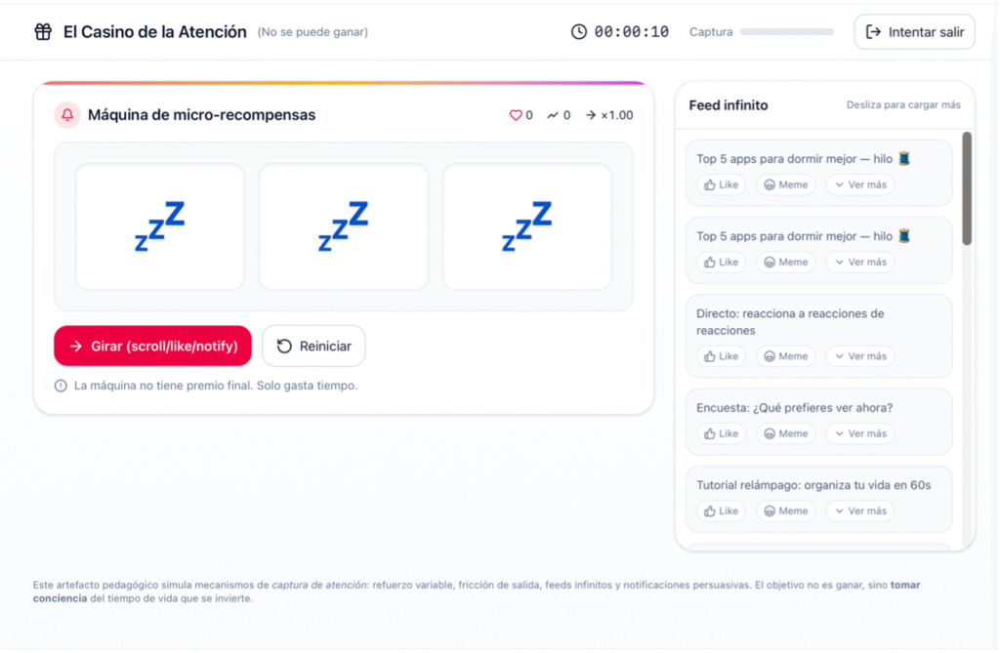
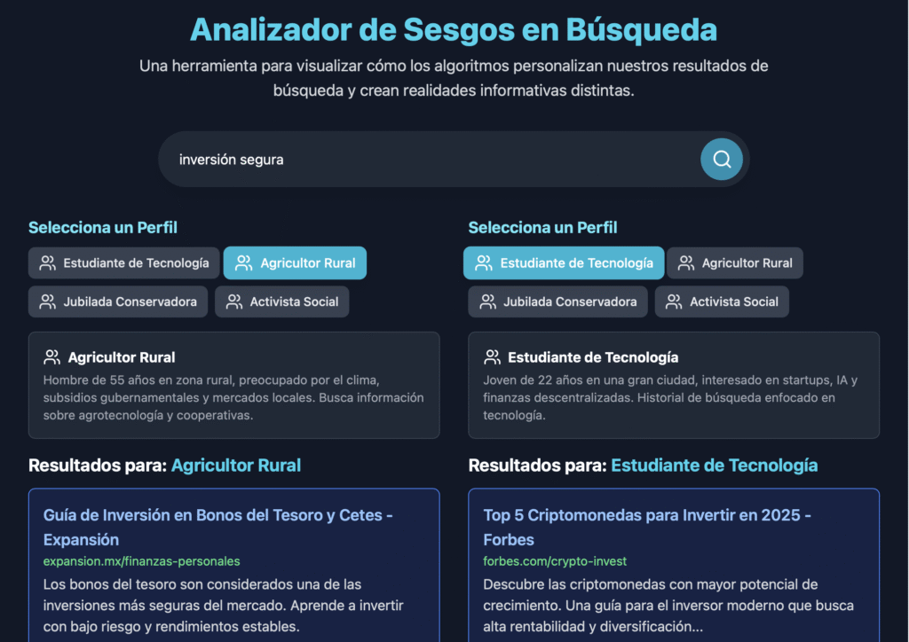
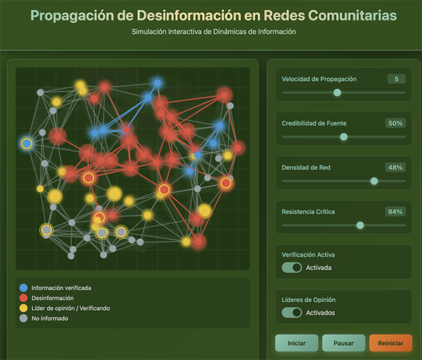

Descifrando algoritmos, tejiendo mediaciones
Reproducen sesgos, concentran poder y moldean la experiencia cotidiana.
Usamos herramientas de IA generativa para crear recursos críticos sobre la inteligencia artificial, las mediaciones algorítmicas y el aprendizaje.
Construimos respuestas situadas y adaptadas a nuestros contextos y a nuestras realidades.

Visibiliza la economía de la atención mediante la metáfora del casino. Cada scroll y notificación tiene un costo real medible en tiempo y concentración.
Próximamente
Simula resultados de búsqueda evidenciando sesgos raciales y de género. Basado en la investigación de Safiya Noble sobre algoritmos de opresión.
Explorar →
Simula la propagación de información verdadera y falsa en redes sociales. Experimenta con fact-checkers y alfabetización mediática en tiempo real.
Explorar →Generamos conocimiento sobre las mediaciones algorítmicas, su impacto social y sus implicaciones éticas, en diálogo con Critical Algorithm Studies y la tradición crítica latinoamericana.
Desarrollamos herramientas pedagógicas de código abierto para explorar el funcionamiento algorítmico de forma lúdica y crítica. Más de 10 simuladores disponibles y listos para usar.
Creamos redes de colaboración, espacios de discusión y talleres para docentes, investigadores y ciudadanía en general.
LAMA nace en Cali, desde la Escuela de Comunicación Social de la Universidad del Valle, con la convicción de que los problemas de la era algorítmica tienen soluciones situadas.